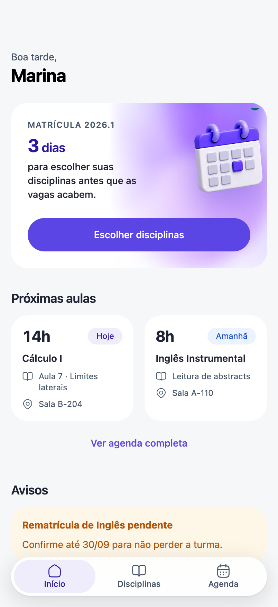
O caso Marina: uma matrícula no celular, e o sistema de design que a sustenta.
19 anos, caloura, só tem o celular, e já perdeu uma vaga por demorar. Cinco telas levam da escolha à confirmação, mais quatro estados de erro e espera.
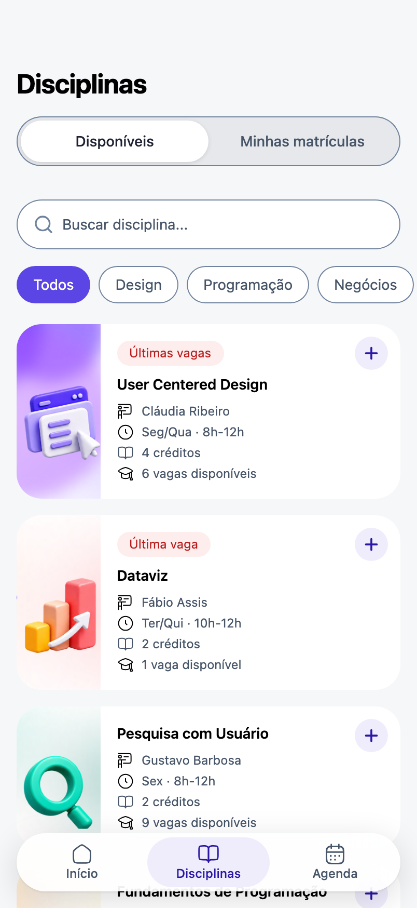
Compara vagas, horário e professor na lista
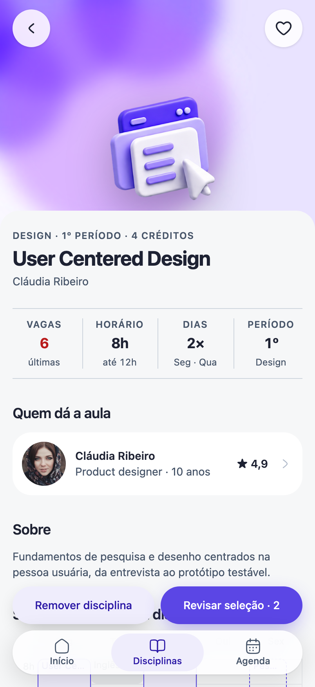
Detalhe, professor e choque de horário
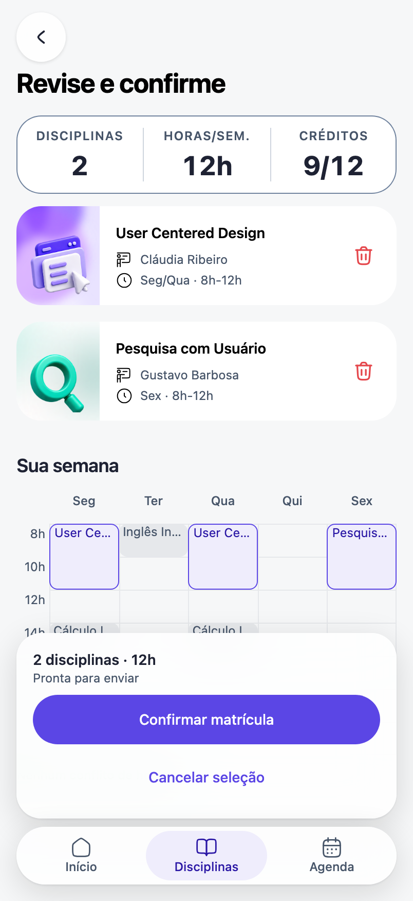
Semana montada e créditos 9/12
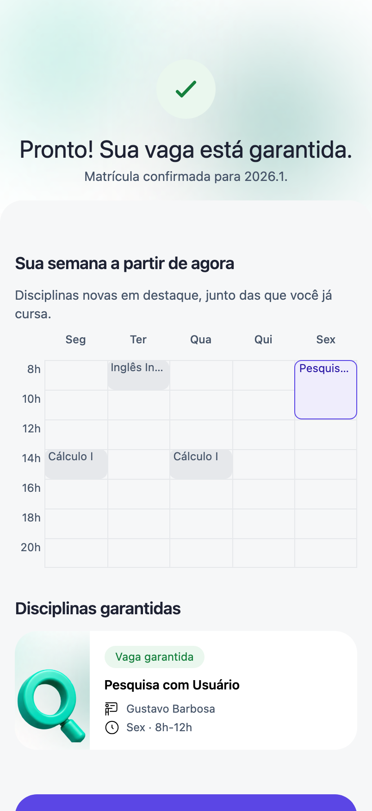
Confirmação com a semana pronta
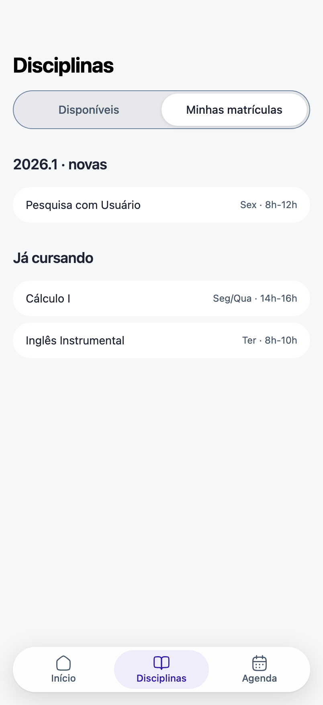
O que já está matriculado
Outra pessoa leva a última vaga de Dataviz enquanto Marina decide. Nada é confirmado, nada é perdido, e a tela diz exatamente o que fazer.
O que aconteceu: “A vaga de Dataviz acabou.”
O que não mudou: “Sua matrícula ainda não foi confirmada.”
O que fazer: “Remover Dataviz” ou “Fechar”.
115 variáveis do Figma, uma fonte única em código. Cada escolha com o seu porquê.
Uma cor de marca (purple/500) que também é a cor da ação. Hover em 600 e pressed em 700.
Se roxo cheio significa “próximo passo”, a cor já diz onde tocar. O componente só conhece o papel; trocar a marca é trocar um primitivo.
Alias do Figma apontava gray/500 (ilegível em 14px). Agora aponta gray/600.
Fundo #e5484d com texto branco. Passou a usar o token de texto de erro, red/700.
Os 72% do padrão do iOS reprovavam. 86% é o mínimo que mantém 4,5:1.
Busca, chips e seletor com borda quase invisível. Novo token: gray/500.
Achados da avaliação heurística (IA-01, IA-06) e das decisões 1 e 19. Texto 4,5:1 e componente 3:1 são os mínimos AA.
Auditado no navegador: nenhum espaço da tela fica fora da lista.
Só 4 · 8 · 12 · 16 · 24 · 32 · 48 · 64, e uma regra de uso por valor.
Sem regra, dois designers escolhem valores diferentes para o mesmo caso. Com ela, o espaço diz o parentesco: quanto mais perto, mais relacionado.
O space/40 do Figma (fora da escala) e os 72, 96 e 200px soltos, que viraram 64, 48 e 3 × 64.
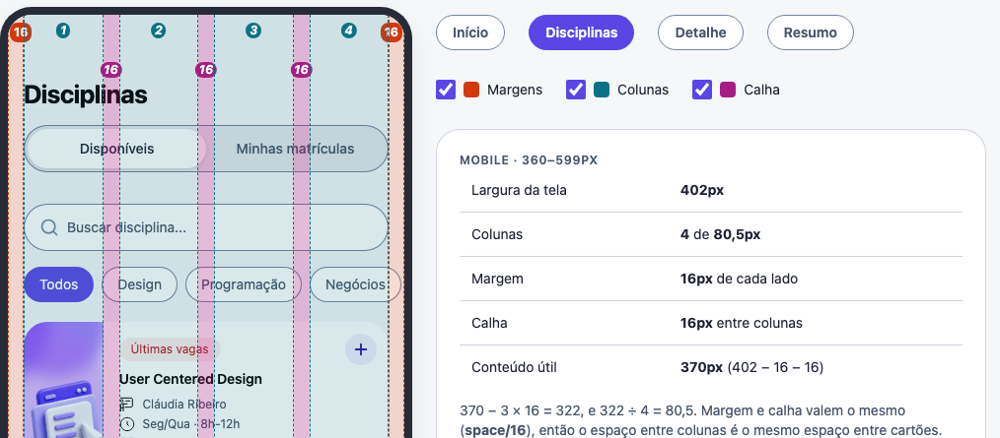
Menor grid: 70px por coluna, ~26 caracteres no título
Coluna centraliza, com cantos e sombra
Quebrar em 360px e 600px, nunca pelo nome de um aparelho.
Abaixo de 360px o texto do cartão cai para menos de ~25 caracteres por linha. Acima de 600px a coluna de 402px (~60 caracteres, o limite de leitura confortável) já não ocupa a tela.
A quebra de 380px do primeiro rascunho (nunca implementada) e uma grade de 12 colunas, excessiva numa tela de 402px.
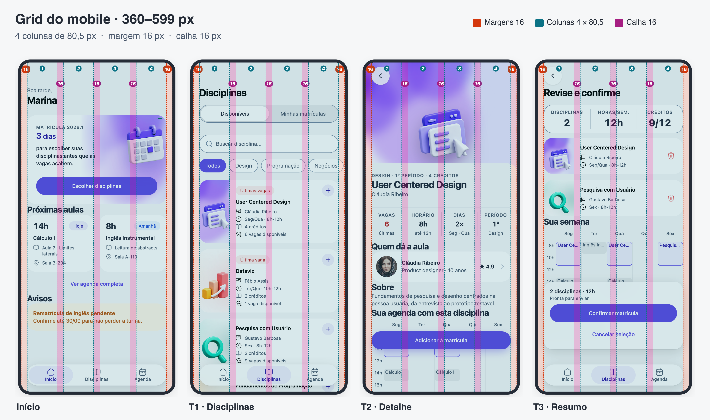
Amostras ampliadas 2×. Fonte do sistema (SF no iPhone): zero download, leitura nativa. Nada herda os 16px do navegador.
Rótulo de botão no corpo de 14; o roxo cheio marca a única ação principal da tela.
Com o botão em 18, ele ficava maior que o texto que rotula. A referência faz igual: Material 3 labelLarge 14/20 e Ant Design com base 14.
Os 9 tamanhos do Figma (13, 16, 20, 24, 28, 56…), o 56px como sexto degrau e um degrau extra de 16.
Por quê o 8: o bloco de 2h da agenda tem 32px de altura. Com 16 de raio, virava pílula.
Descartado: usar 8 só na agenda, que daria 4 raios, acima do limite de 3.
Por quê: sombra diz “isto está acima e pode cobrir conteúdo”. Cartão plano não compete com a barra que flutua.
Token: shadow/float = 0 8 32 preto 14%.
Por quê: 86% é o mínimo que mantém 4,5:1 com conteúdo escuro passando por baixo.
Descartado: os 72% do padrão do iOS, reprovados na medição.
Vidro só nas barras que flutuam (topo, tab bar, acessório de seleção). Com “reduzir transparência” ligado, elas viram superfície sólida.
Sai rápido, freia suave. Nunca passa do destino.
O salto é o “deu certo”: só no + → ✓.
A mola só aparece quando algo foi confirmado (adicionar, ✓). Navegar usa a curva padrão.
Movimento é informação: deslizar diz “mudei de tela”, saltar diz “deu certo”. Se tudo saltasse, nada comunicaria sucesso. Com “reduzir movimento”, as durações zeram e os laços rodam uma vez só (IA-08).
A animação decorativa de flutuar e o laço infinito do esqueleto com movimento reduzido ligado, que faria piscar.
Botão, selo, ícone. Não se divide sem perder sentido.
Átomos com uma função: busca, segmento, aviso.
Cartão de disciplina: arte na coluna 1, texto nas colunas 2 a 4.
T1 inteira, sem uma peça nova.
Ampliado 2×. Toque no + para ver o estado selecionado com a mola de 240ms.
Um + redondo de 48px no cartão, ao lado de um segundo botão que cobre o cartão e abre o detalhe.
Selecionar sem sair da lista. Dois botões irmãos, sem aninhar, e cada um tem nome próprio para leitor de tela (aria-pressed no +).
Caixa de seleção (sugestão IA-13, recusada: o + é mais reconhecível) e cartão sem ação, só com seleção no detalhe.
Dataviz sai da sua matrícula e volta para a lista de disciplinas. Você pode escolher ela de novo depois.
O anel roxo marca onde o foco começa: na ação segura.
Remover, descartar, vaga esgotada e perfil do professor usam o mesmo BottomSheet: sobe de baixo, sem ×, ação principal em cima.
No celular a ação fica ao alcance do polegar. A lógica de abrir, fechar e devolver o foco estava repetida em 4 lugares; virou uma peça só, com página no Storybook.
Diálogo centrado e repetir o CSS do perfil em cada caso.
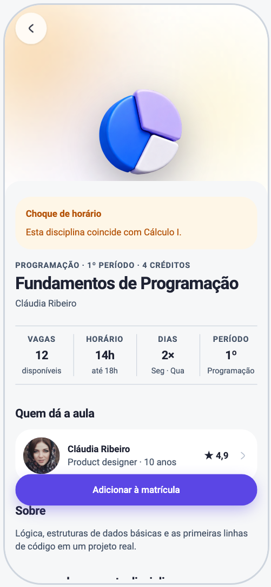
Detalhe · aviso
a disciplina ainda entra
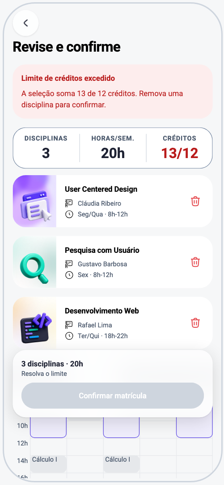
Resumo · erro
bloqueia o Confirmar
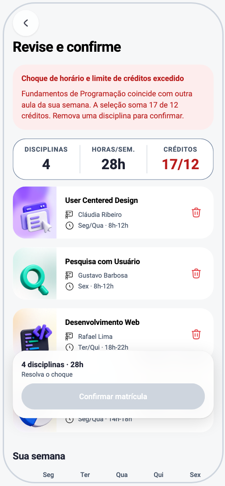
Dois problemas
uma só mensagem
Avisos viram o componente SystemMessage no topo, com título, fatos e próximo passo. Com mais de um problema, uma só mensagem.
Dois avisos empilhados repetiam a mesma ação e ocupavam o topo. O título nomeia o problema sem depender da cor (WCAG 1.4.1) e aparece sem rolar (heurísticas 1 e 8).
Texto vermelho solto no meio da página; um componente Alert novo (o existente já cumpre o papel); mostrar só o problema mais grave.
| Nome | Valor | Camada | Razão |
|---|---|---|---|
| color/purple/500 | #5b46e5 | Primitiva | Marca e ação |
| color/gray/600 | #475569 | Primitiva | Texto secundário legível |
| space/48 | 48px | Primitiva | Fim de bloco grande; o Figma só tinha 40 |
| color/text/secondary | gray/600 | Semântica | 7,06:1; ajuste do Figma |
| color/feedback/error/bg | red/50 | Semântica | Erro sem depender só da cor |
| material/glass | white 86% + blur 24 | Semântica | Mínimo que mantém 4,5:1 |
| radius/card | radius/xl | Componente | Cartão e folha a 24px |
| radius/inner | radius/sm | Componente | Agenda e caixa a 8px |
Hex só na base. Troque o primitivo e tudo que depende dele muda junto; troque o semântico e só o papel muda. Poucos de componente: uma pirâmide invertida seria uma lista de exceções.
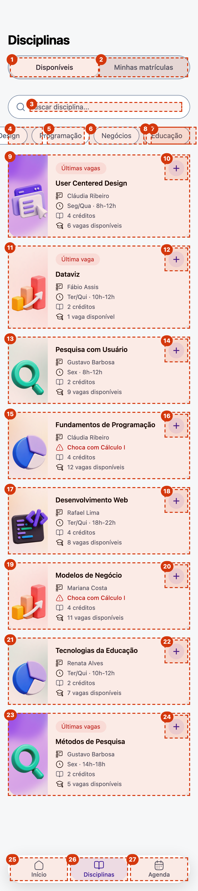
27 paradas de foco numeradas na T1. Toda sobreposição fecha com Esc e devolve o foco. Contraste medido e axe-core em todas as telas.
Alvos de 48px
Contraste ≥ 4,5:1
Nunca só a cor
Foco roxo de 3px
Erro diz o que fazer
Cada pixel com uma decisão e uma justificativa. Próximo passo: o teste com uma pessoa real, no celular.
Obrigado